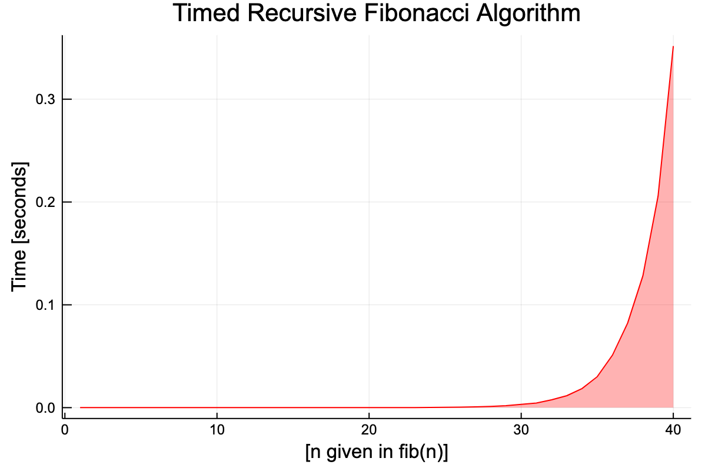
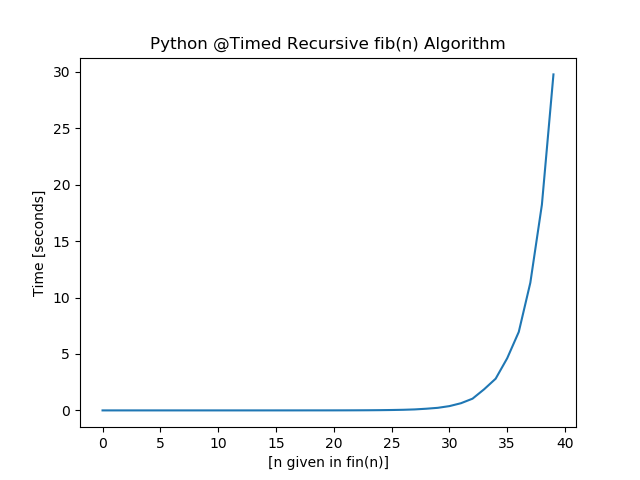
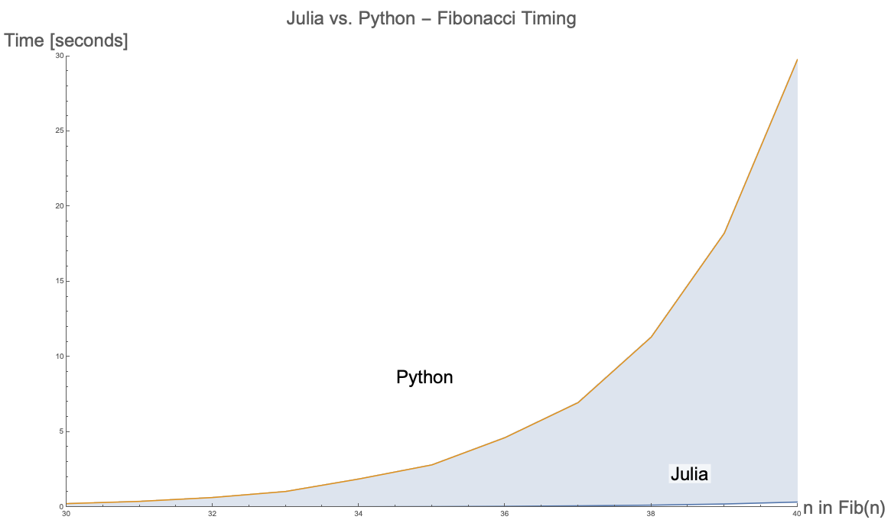

Speed of Julia

Creating fib(n)
function fib(n)
if (n == 1 || n == 2)
return 1
else
return fib(n - 1) + fib(n - 2)
end
end
Timing fib(n) 1:40
function fibTime(k)
t = []
for i in 1:k
push!(t, (@timed fib(i))[2])
end
return t
end
# :: Print @timed Fibonacci 1 through 40
println(fibTime(40))
Plotting @Timed Results
The timing for Julia is surprisingly very fast!
using Plots
plot(fibTime(40), title="Timed Recursive Fibonacci Algorithm",
color = :red, fill = (0, .3, :red), legend = false)
xaxis!("[n given in fib(n)]")
yaxis!("Time [seconds]")
 Figure 1 — Timed Recursive Algorithm That Calculates $n^{th}$ Fibonacci Number in Julia.
Achieve Results in Python
from matplotlib import pyplot as plt
import time
def fib(n):
if (n == 1) or (n == 2):
return 1
else:
return fib(n - 1) + fib(n - 2)
def fibTimed(k):
t = []
for i in range(1, k + 1):
s = time.time()
fib(i)
fib_t = time.time() - s
t.append(fib_t)
return t
result = fibTimed(40)
print(result)
plt.plot(result)
plt.title("Python @Timed Recursive fib(n) Algorithm")
plt.xlabel("[n given in fin(n)]")
plt.ylabel("Time [seconds]")
plt.show()
The results from Python are significantly slower than compared to Julia. $Fib(40)$ takes nearly $30$ seconds to complete.
 Figure 2 — Timed Recursive Algorithm That Calculates $n^{th}$ Fibonacci Number in Python.
Show Julia Versus Python Comparison
The plot below shows that Julia is significantly more efficient compared to Python for this recursive algorithm.
 Figure 3 — Timed Recursive Algorithm Between Julia and Python between $n = 30$ and $n = 40$